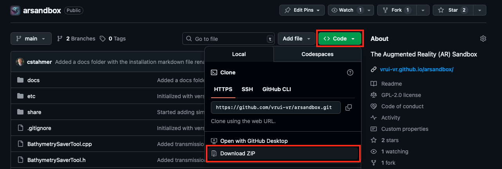

Simple Augmented Reality Sandbox Installation guide¶
Heads up!
Angle brackets <> in commands below are placeholders, meaning that you have to replace everything between, and including, the angle brackets with some text that depends on your specific circumstances.
For example, if your host has eight CPUs, instead of entering -j<number of CPUs> as part of some command, you would enter -j8.
Step 1: Download the ARSandbox repository from GitHub¶
The ARSandbox code repository can be downloaded either by:
- downloading the zip file and unpacking it OR
- cloning the repository with
git clone
Warning
If you are unfamiliar with git and/or GitHub, you should probably go the zip file route.
Option 1: Downloading and unpacking a zip file from GitHub¶
On the ARSandbox repository's main page, click on the green "<> Code" button, and then click on "Download ZIP" in the menu that pops up in response.

Depending on your browser settings, you may be asked where to store the file being downloaded, or it might be stored in a default location, such as your Downloads directory. Take note of what the zip file is called and where it is stored.
Assuming that you already created the src directory according to Vrui's installation instructions, enter the following line into a terminal window once the file is completely downloaded:
cd ~/src
Then enter into the same terminal window:
unzip <path to downloaded zip file>
Replace <path to downloaded zip file> with the full path to the zip file, for example ~/Downloads/arsandbox-main.zip.
Finally, check for the name of your new ARSandbox directory by entering:
ls
which will list all files in the src directory, which should include a new directory called arsandbox-main. Take note of this name, and then enter into that directory by typing this command into the terminal window:
cd <ARSandbox directory>
where you replace <ARSandbox directory> with the name of the directory where you cloned/unpacked the ARSandbox in the previous step, as printed by ls.
Option 2: Clone the repository from GitHub¶
Assuming that you already created the src directory according to Vrui's installation instructions, navigate to the src directory on your computer in the terminal window.
cd ~/src
Then, clone the repository from GitHub:
git clone https://github.com/vrui-vr/arsandbox.git
Finally, check for the name of your new ARSandbox directory by entering:
ls
which will list all files in the src directory, which should include a new directory called arsandbox. Take note of this name, and then enter into that directory by typing this command into the terminal window:
cd <ARSandbox directory>
where you replace <ARSandbox directory> with the name of the directory where you cloned/unpacked the ARSandbox in the previous step, as printed by ls.
Step 2: Build the ARSandbox¶
Heads up!
Make sure you are in the new arsandbox-main (from option 1) or arsandbox (from option 2) directory.
To build the ARSandbox, enter into the same terminal window:
make VRUI_MAKEDIR=<Vrui build system location>
where you replace <Vrui build system location> with the location of Vrui's build system on your host, as described in Vrui's installation instructions.
Example
Your command will look something like this:
make VRUI_MAKEDIR=/usr/local/share/Vrui-13.1/make
Tip
You can speed up the build process if your host has multiple CPUs or CPU cores. Instead of the above, enter into the same terminal:
make VRUI_MAKEDIR=<Vrui build system location> -j<number of cpus>
again replacing <Vrui build system location> with the location of Vrui's build system on your host, and replacing <number of cpus> with the number of CPUs or CPU cores on your host, say -j8 if you have eight cores. Note that there is no space between the -j and the number of cores.
Using -j$(nproc) (exactly as written) will tell your computer to figure out how many cores it has.
Once make has finished running, check that there were no error messages. The quickest way to check whether the ARSandbox built successfully is to run the make command a second time, exactly as you entered it the first time.
If everything went well the first time, the second run will print:
make: Nothing to be done for 'all'.
Step 3: Installing the ARSandbox¶
If built following these simple instructions, the ARSandbox does not need to be installed. You can run the built applications, CalibrateProjector, SARndbox, and SARndboxClient, directly from the directory where you cloned or unpacked the sources.
For example, to run the main ARSandbox application, you would enter the following into a terminal window:
cd <ARSandbox directory>
./bin/SARndbox
where you replace <ARSandbox directory> with the full name of the directory where you cloned/unpacked the ARSandbox sources, for example:
cd ~/src/arsandbox-main
./bin/SARndbox